Loading and Visualizing data#
Kalpa is designed to handle and visualize various types of geospatial data. This chapter provides an overview of the supported data formats, loading instructions, and customization options to optimize your workflow.
Types of Geospatial Data#
Kalpa primarily supports two types of geospatial data:
1. Raster Data#
Raster data represents information as a grid of values. Each pixel in the grid corresponds to a specific geographic location and contains a value representing a characteristic of that location (e.g., elevation, temperature, or satellite imagery).
Continuous Raster Data: Values vary smoothly across space (e.g., elevation or temperature).
Categorical Raster Data: Discrete values representing classes (e.g., land use or vegetation type).
Currently, Kalpa supports raster data in the NetCDF format with a single layer of data per file.
2. Vector Data#
Vector data describes geographic features using geometries like points, lines, and polygons. Attributes are associated with these features, representing their characteristics (e.g., faults, subduction zones, geological features, roads, rivers).
Supported Formats: ESRI shapefiles (.shp) and GeoPackage (.gpkg).
Geometries Supported: Points, lines, polygons, and multipolygons.
Note: For large datasets with complex geometries, Kalpa may display simplified points for faster rendering. This does not alter the underlying data, which is used for processing and workflows.
Loading and Configuring Raster Data#
Loading Raster Data#
Navigate to File > Import > Raster Data.
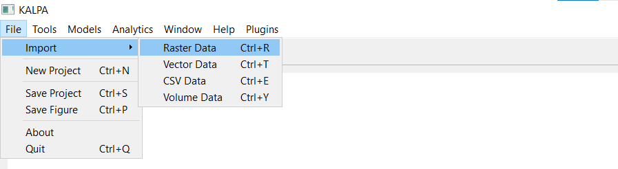
Select one or more NetCDF files and click Open.
The loaded layers will be displayed in the Layer Panel.
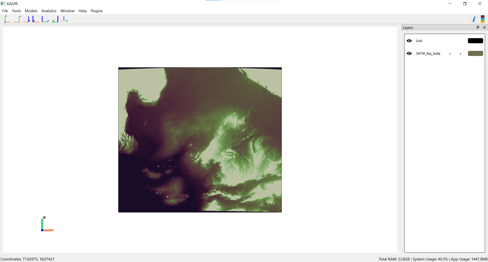
To visualise the legend, Click the legend icon in the toolbar or navigate to Window > Legend.
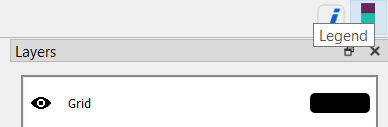
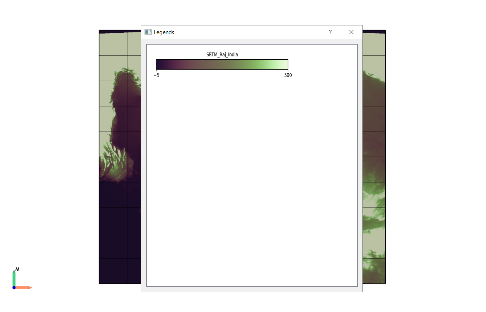
Managing Layers#
Toggle the visibility of a layer using the eye icon next to the layer name.
Customizing Layer Properties#
Click the colored rectangle next to the layer name in the Layer Panel to open the settings.
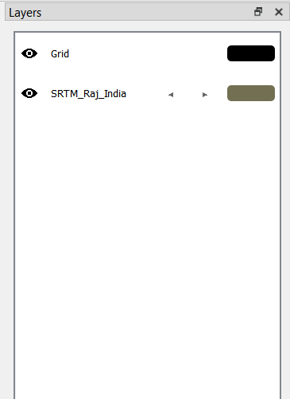
Configure the following properties:
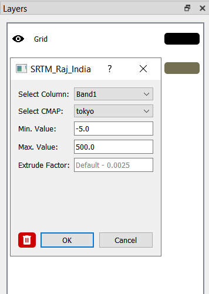
Select Column
Choose which specific layer or variable to display from multi-layer raster files.
By default, Kalpa displays the first available layer in the file.
Use the dropdown menu to switch between different layers within the same file without reloading the data.
Select CMAP (Color Map)
Kalpa supports over 50 colormaps, including those from matplotlib and Crameri’s scientific colormaps.
Example colormaps:
o Sequential: ‘viridis’, ‘plasma’, ‘magma’, etc.
o Diverging: ‘coolwarm’, ‘seismic’, etc.
o Scientific: ‘batlow’, ‘roma’, ‘berlin’, etc.
Data Range
By default, the colormap range is set to the minimum and maximum values of the dataset.
You can manually specify the minimum and maximum values for better control over the visualization.
Extrude Factor
Controls vertical scaling in 3D visualization.
It is a scaling factor applied to the raster values to achieve vertical exaggeration:
Default: 0.0025 (small exaggeration for subtle relief)
Larger values (0.1-1.0): dramatic exaggeration for visualization
Too large: mesh becomes distorted/unrealistic
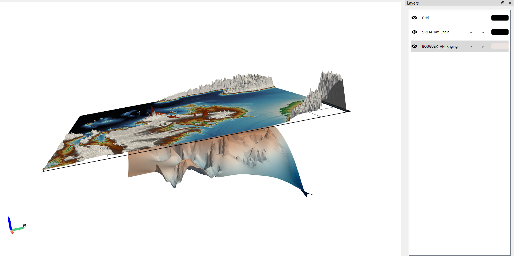
Loading and Configuring Vector Data#
Loading Vector Data#
Navigate to File > Import > Vector Data.
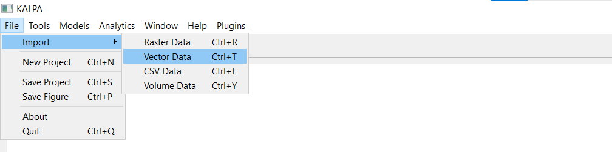
Select one or more
.shpor.gpkgfiles and click Open.The loaded layers will be displayed in the Layer Panel.
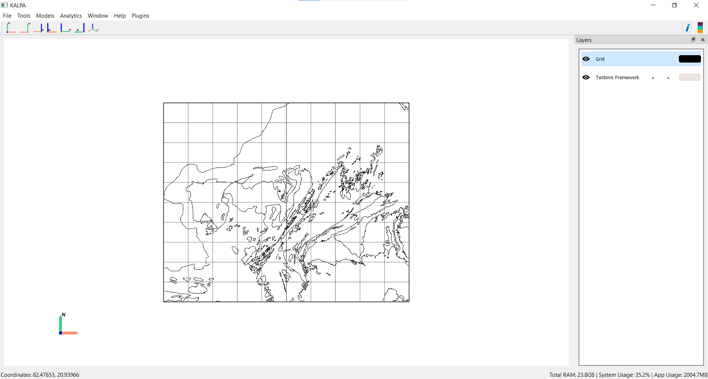
To visualise the legend, Click the legend icon in the toolbar or navigate to Window > Legend.
Managing Layers#
Toggle the visibility of a layer using the eye icon next to the layer name.
Customizing Layer Properties#
Click the colored rectangle next to the layer name in the Layer Panel to open the settings.
Configure the following properties:
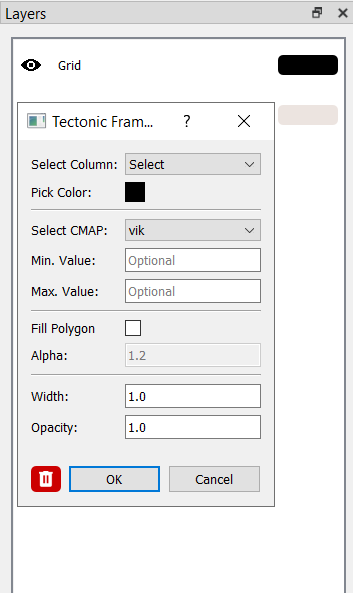
Geometry Display
By default, geometries are displayed in a single color. Use the color picker to change the outline color.
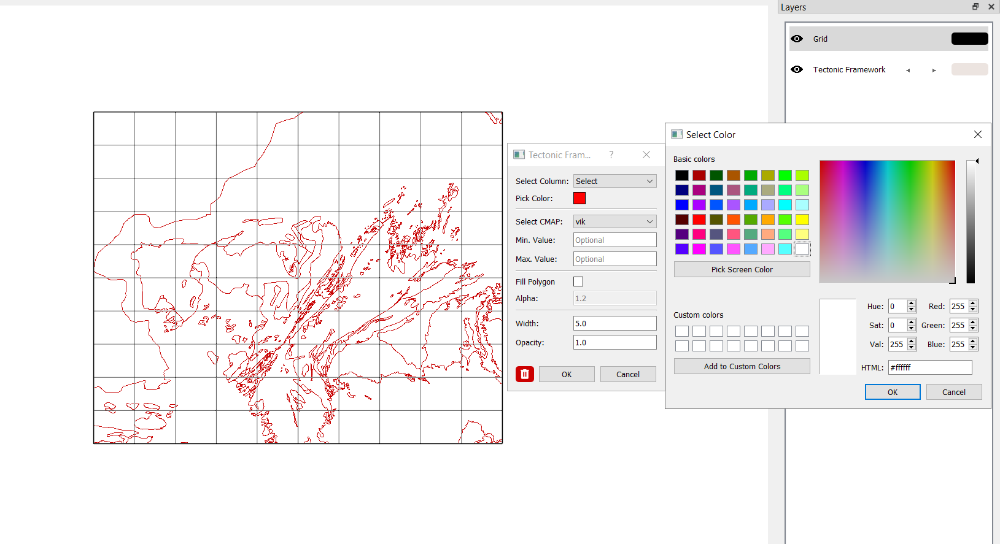
Attribute-Based Coloring
Select a column and a cmap and check fill polygon option to activate colormap-based visualization.
Assign different colormaps or ranges to represent specific attributes.
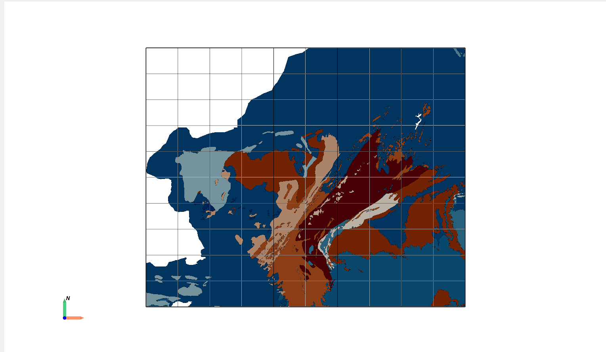
Size and Opacity
Adjust the size/width and opacity of the geometries for better visualization.
Future Features#
Time-Dependent Data
Raster and Vector Data: Enhanced functionality for visualizing and analyzing time-dependent geospatial datasets.
Volume Raster Data
Support for volumetric raster data will be introduced, enabling 3D visualization of subsurface features.
Time-Dependent Volume raster
Upcoming versions will include the ability to handle dynamic volumetric data.